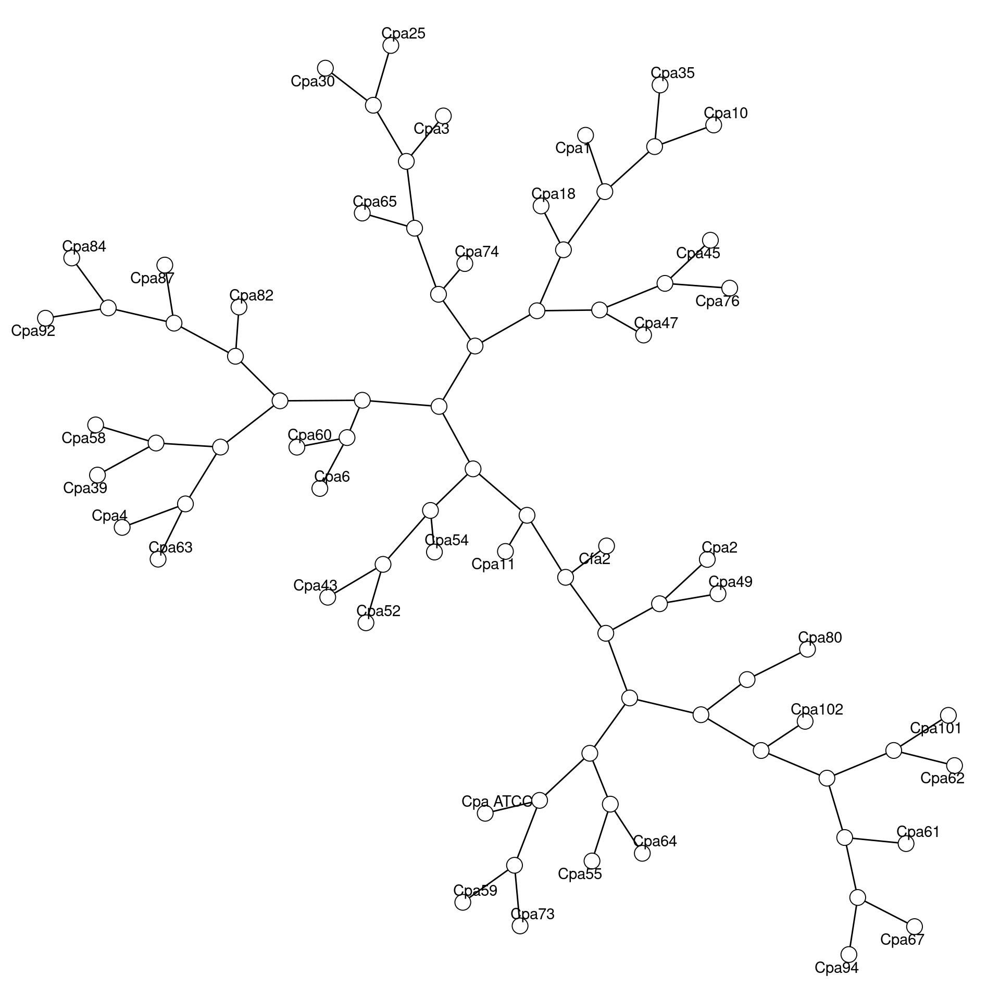
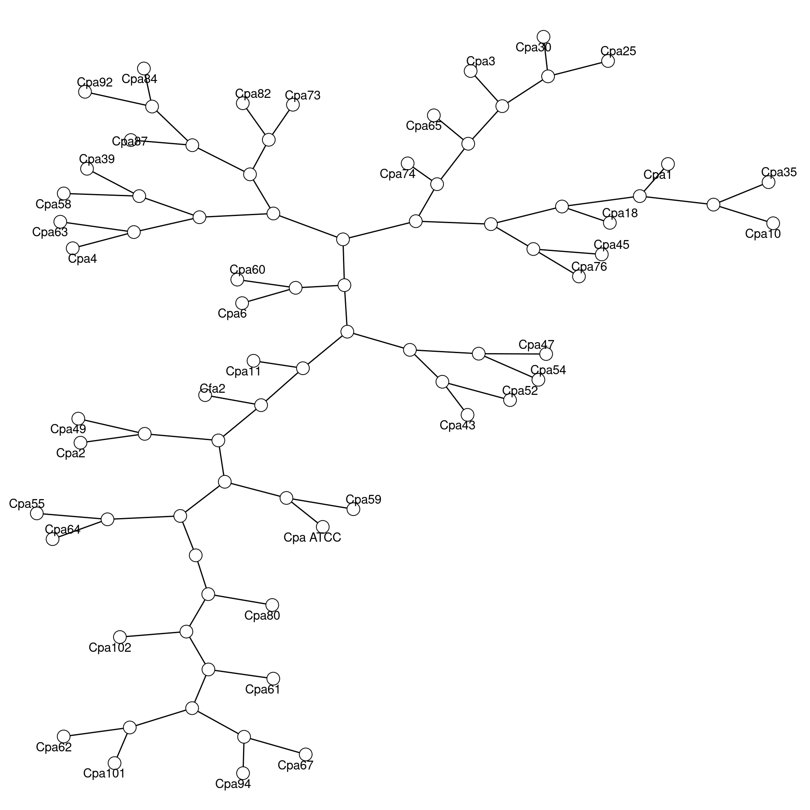
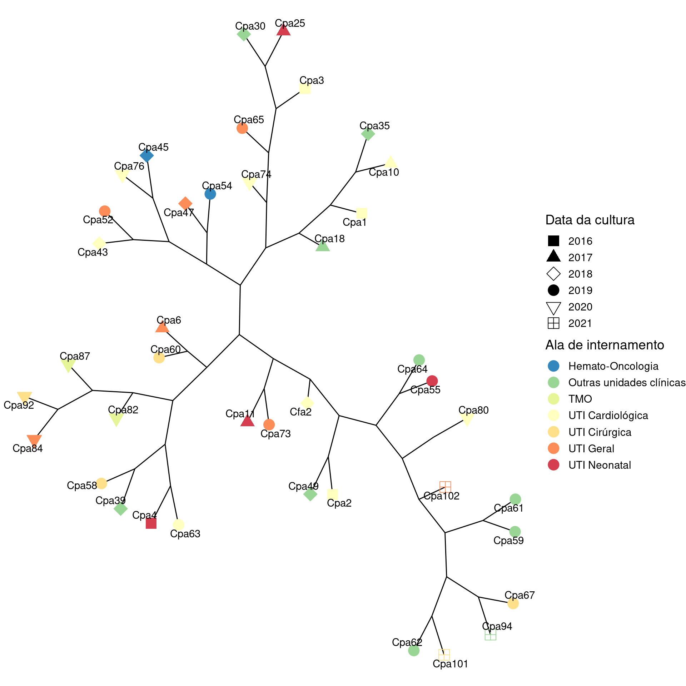

Análise 6: microssatélite de isolados de C. parapsilosis
Luiza Souza Rodrigues e Henrique Laureano
Last modification on 2022-09-23 16:33:58
Dados: 22/09/2022
sample dissimilarity
1 Cpa1 NA
2 Cpa10 0.000000
3 Cpa35 0.000000
4 Cpa18 4.572078
5 Cpa76 12.810154
6 Cpa45 5.903450
7 Cpa47 10.775612
8 Cpa25 13.401354
9 Cpa30 6.831378
10 Cpa3 10.062921
11 Cpa65 10.777043
12 Cpa74 11.718307
13 Cpa82 14.743529
14 Cpa87 8.204891
15 Cpa84 6.701951
16 Cpa92 4.164831
17 Cpa39 11.567378
18 Cpa58 7.607383
19 Cpa4 10.263448
20 Cpa63 9.310708
21 Cpa60 14.382018
22 Cpa6 11.527849
23 Cpa43 16.068410
24 Cpa52 8.721447
25 Cpa54 11.743290
26 Cpa11 16.818816
27 Cfa2 18.244746
28 Cpa49 19.178073
29 Cpa2 9.681275
30 Cpa73 21.731218
31 Cpa59 14.062913
32 Cpa ATCC 16.758205
33 Cpa55 21.610512
34 Cpa64 12.220994
35 Cpa67 40.372973
36 Cpa94 32.435587
37 Cpa61 32.823425
38 Cpa101 33.016857
39 Cpa62 31.178342
40 Cpa102 34.778321
41 Cpa80 56.913288
Dados: 22/09/2022, reduzido
sample dissimilarity
1 Cpa1 NA
2 Cpa10 0.000000
3 Cpa35 0.000000
4 Cpa18 4.475813
5 Cpa76 11.031592
6 Cpa45 5.779153
7 Cpa25 11.614030
8 Cpa30 6.687543
9 Cpa3 8.827376
10 Cpa65 9.964089
11 Cpa74 10.870760
12 Cpa82 12.506181
13 Cpa73 7.236991
14 Cpa87 8.471915
15 Cpa84 6.560841
16 Cpa92 4.077141
17 Cpa39 10.324668
18 Cpa58 6.232003
19 Cpa4 9.408289
20 Cpa63 7.776222
21 Cpa60 12.967673
22 Cpa6 10.234577
23 Cpa47 14.880958
24 Cpa54 9.657859
25 Cpa43 11.917467
26 Cpa52 7.899525
27 Cpa11 16.106971
28 Cfa2 17.050152
29 Cpa49 18.482122
30 Cpa2 8.870747
31 Cpa ATCC 19.006451
32 Cpa59 9.109691
33 Cpa55 21.337636
34 Cpa64 10.676365
35 Cpa67 46.499007
36 Cpa94 31.592644
37 Cpa101 31.767636
38 Cpa62 30.272907
39 Cpa61 32.022852
40 Cpa102 33.739627
41 Cpa80 41.611747
Dados: 22/09/2022, Ala / Ano
sample dissimilarity
1 Cpa1 NA
2 Cpa10 0.000000
3 Cpa35 0.000000
4 Cpa18 4.844067
5 Cpa25 13.215372
6 Cpa30 6.687404
7 Cpa3 9.862056
8 Cpa65 10.717826
9 Cpa74 11.513772
10 Cpa76 14.581321
11 Cpa45 5.809978
12 Cpa43 12.144396
13 Cpa52 8.713378
14 Cpa47 12.933379
15 Cpa54 10.751579
16 Cpa82 15.042585
17 Cpa87 8.033876
18 Cpa84 6.560361
19 Cpa92 4.093032
20 Cpa39 11.385583
21 Cpa58 7.464462
22 Cpa4 10.148519
23 Cpa63 9.335195
24 Cpa60 14.179087
25 Cpa6 11.450524
26 Cpa73 16.903065
27 Cpa11 16.214491
28 Cfa2 17.908344
29 Cpa49 18.643940
30 Cpa2 9.623358
31 Cpa55 21.219674
32 Cpa64 12.400342
33 Cpa67 39.520776
34 Cpa94 31.679553
35 Cpa101 32.200833
36 Cpa62 30.452951
37 Cpa61 33.160200
38 Cpa59 32.436980
39 Cpa102 34.288670
40 Cpa80 54.386785

Referências
A análise estatística foi realizada no ambiente de computação estatística R (R Core Team 2022). Os principais pacotes
Rutilizados foram {cluster} (Maechler et al. 2022), {ComplexHeatmap} (Gu, Eils, and Schlesner 2016) e {ggraph} (Pedersen 2022).Para clusterização utilizamos a rotina
agnes(Agglomerative Nesting - Hierarchical Clustering), baseada numa generalização do algoritmo UPGMA (Kaufman and Rousseeuw 1990; Belbin, Faith, and Milligan 1992; Struyf, Hubert, and Rousseeuw 1997).
Belbin, L., D. P. Faith, and G. W. Milligan. 1992. “A Comparison of Two Approaches to Beta-Flexible Clustering.” Multivariate Behavioral Research 9: 373–80.
Gu, Zuguang, Roland Eils, and Matthias Schlesner. 2016. “Complex Heatmaps Reveal Patterns and Correlations in Multidimensional Genomic Data.” Bioinformatics. https://doi.org/10.1093/bioinformatics/btw313.
Kaufman, L., and P. J. Rousseeuw. 1990. Finding Groups in Data: An Introduction to Cluster Analysis. Wiley, New York.
Maechler, Martin, Peter Rousseeuw, Anja Struyf, Mia Hubert, and Kurt Hornik. 2022. cluster: Cluster Analysis Basics and Extensions. R package version 2.1.3. https://CRAN.R-project.org/package=cluster.
Pedersen, Thomas Lin. 2022. ggraph: An Implementation of Grammar of Graphics for Graphs and Networks. R package version 2.0.6. https://CRAN.R-project.org/package=ggraph.
R Core Team. 2022. R: A Language and Environment for Statistical Computing. Vienna, Austria: R Foundation for Statistical Computing. https://www.R-project.org/.
Struyf, A., M. Hubert, and P. J. Rousseeuw. 1997. “Integrating Robust Clustering Techniques in S-PLUS.” Computational Statistics and Data Analysis 26: 17–37.